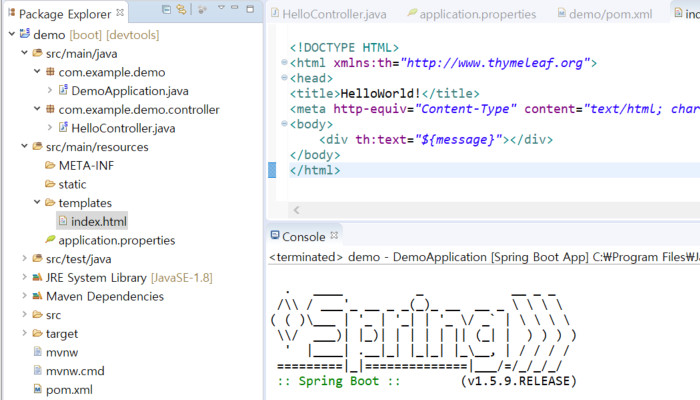
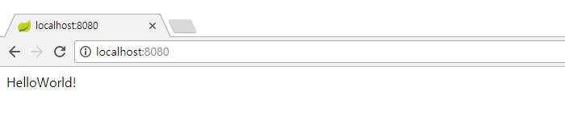

pom.xml
<dependency>
<groupId>org.springframework.boot</groupId>
<artifactId>spring-boot-starter-thymeleaf</artifactId>
</dependency>
HelloController.java
import java.util.Map;
import org.springframework.stereotype.Controller;
import org.springframework.web.bind.annotation.RequestMapping;
@Controller
public class HelloController {
@RequestMapping("/")
public String index(Map<String, Object> model) {
model.put("message", "HelloWorld!");
return "index";
}
}
src/main/resources/templates/index.html
<!DOCTYPE HTML>
<html xmlns:th="http://www.thymeleaf.org">
<head>
<title>HelloWorld!</title>
<meta http-equiv="Content-Type" content="text/html; charset=UTF-8" /></head>
<body>
<div th:text="${message}"></div>
</body>
</html>
위의 소스를 아래와 같은 구조로 작성한다.

프로젝트 폴더에서 마우스 오른쪽 클릭 -> Run As -> Spring Boot App을 실행한다.
브라우저에서 http://localhost:8080을 입력하면 HelloWorld!가 출력된다.
